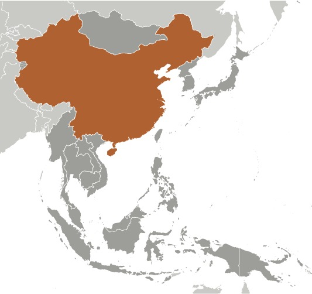
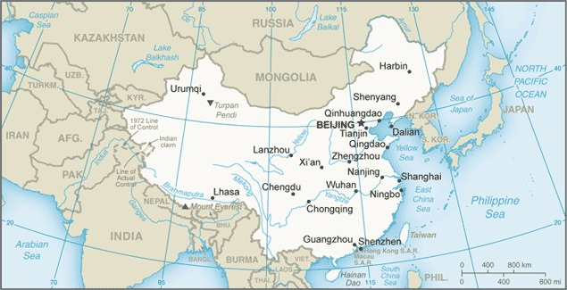
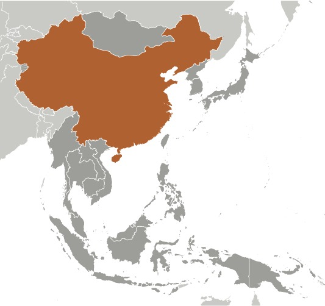
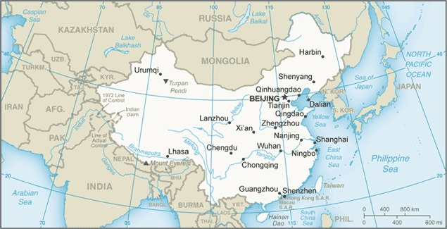

-
Introduction :: China
-
Background:
China's historical civilization dates from at least 1200 B.C.; from the 3rd century B.C. and for the next two millennia, China alternated between periods of unity and disunity under a succession of imperial dynasties. In the 19th and early 20th centuries, the country was beset by civil unrest, major famines, military defeats, and foreign occupation. After World War II, the Chinese Communist Party under MAO Zedong established an autocratic socialist system that, while ensuring China's sovereignty, imposed strict controls over everyday life and cost the lives of tens of millions of people. After 1978, MAO's successor DENG Xiaoping and other leaders focused on market-oriented economic development and by 2000 output had quadrupled. For much of the population, living standards have improved dramatically but political controls remain tight. Since the early 1990s, China has increased its global outreach and participation in international organizations.
-
Geography :: China
-
Location:Eastern Asia, bordering the East China Sea, Korea Bay, Yellow Sea, and South China Sea, between North Korea and VietnamGeographic coordinates:35 00 N, 105 00 EMap references:AsiaArea:total: 9,596,960 sq kmland: 9,326,410 sq kmwater: 270,550 sq kmcountry comparison to the world: 5Area - comparative:slightly smaller than the USArea comparison map:
 The World Factbook Field Image ModalEast Asia/Southeast Asia :: China Print
The World Factbook Field Image ModalEast Asia/Southeast Asia :: China Print Image Description
Image Descriptionslightly smaller than the US
Land boundaries:total: 22,457 kmborder countries (15): Afghanistan 91 km, Bhutan 477 km, Burma 2129 km, India 2659 km, Kazakhstan 1765 km, North Korea 1352 km, Kyrgyzstan 1063 km, Laos 475 km, Mongolia 4630 km, Nepal 1389 km, Pakistan 438 km, Russia (northeast) 4133 km, Russia (northwest) 46 km, Tajikistan 477 km, Vietnam 1297 kmCoastline:14,500 kmMaritime claims:territorial sea: 12 nmexclusive economic zone: 200 nmcontiguous zone: 24 nmcontinental shelf: 200 nm or to the edge of the continental marginClimate:extremely diverse; tropical in south to subarctic in northTerrain:mostly mountains, high plateaus, deserts in west; plains, deltas, and hills in eastElevation:mean elevation: 1,840 mlowest point: Turpan Pendi -154 mhighest point: Mount Everest (highest peak in Asia and highest point on earth above sea level) 8,849 mNatural resources:coal, iron ore, helium, petroleum, natural gas, arsenic, bismuth, cobalt, cadmium, ferrosilicon, gallium, germanium, hafnium, indium, lithium, mercury, tantalum, tellurium, tin, titanium, tungsten, antimony, manganese, magnesium, molybdenum, selenium, strontium, vanadium, magnetite, aluminum, lead, zinc, rare earth elements, uranium, hydropower potential (world's largest), arable landLand use:agricultural land: 54.7% (2011 est.)arable land: 11.3% (2011 est.) / permanent crops: 1.6% (2011 est.) / permanent pasture: 41.8% (2011 est.)forest: 22.3% (2011 est.)other: 23% (2011 est.)Irrigated land:690,070 sq km (2012)Population distribution:overwhelming majority of the population is found in the eastern half of the country; the west, with its vast mountainous and desert areas, remains sparsely populated; though ranked first in the world in total population, overall density is less than that of many other countries in Asia and Europe; high population density is found along the Yangtze and Yellow River valleys, the Xi Jiang River delta, the Sichuan Basin (around Chengdu), in and around Beijing, and the industrial area around ShenyangNatural hazards:frequent typhoons (about five per year along southern and eastern coasts); damaging floods; tsunamis; earthquakes; droughts; land subsidence
volcanism: China contains some historically active volcanoes including Changbaishan (also known as Baitoushan, Baegdu, or P'aektu-san), Hainan Dao, and Kunlun although most have been relatively inactive in recent centuries
Environment - current issues:air pollution (greenhouse gases, sulfur dioxide particulates) from reliance on coal produces acid rain; China is the world's largest single emitter of carbon dioxide from the burning of fossil fuels; water shortages, particularly in the north; water pollution from untreated wastes; coastal destruction due to land reclamation, industrial development, and aquaculture; deforestation and habitat destruction; poor land management leads to soil erosion, landslides, floods, droughts, dust storms, and desertification; trade in endangered speciesEnvironment - international agreements:party to: Antarctic-Environmental Protocol, Antarctic Treaty, Biodiversity, Climate Change, Climate Change-Kyoto Protocol, Desertification, Endangered Species, Environmental Modification, Hazardous Wastes, Law of the Sea, Marine Dumping, Ozone Layer Protection, Ship Pollution, Tropical Timber 83, Tropical Timber 94, Wetlands, Whalingsigned, but not ratified: none of the selected agreementsGeography - note:note 1: world's fourth largest country (after Russia, Canada, and US) and largest country situated entirely in Asia; Mount Everest on the border with Nepal is the world's tallest peak above sea level
note 2: the largest cave chamber in the world is the Miao Room, in the Gebihe cave system at China's Ziyun Getu He Chuandong National Park, which encloses some 10.78 million cu m (380.7 million cu ft) of volume
note 3: China appears to have been the center of domestication for two of the world's leading cereal crops: millet in the north along the Yellow River and rice in the south along the lower or middle Yangtze River -
People and Society :: China
-
Population:1,394,015,977 (July 2020 est.)country comparison to the world: 1Nationality:noun: Chinese (singular and plural)adjective: ChineseEthnic groups:Han Chinese 91.6%, Zhuang 1.3%, other (includes Hui, Manchu, Uighur, Miao, Yi, Tujia, Tibetan, Mongol, Dong, Buyei, Yao, Bai, Korean, Hani, Li, Kazakh, Dai, and other nationalities) 7.1% (2010 est.)
note: the Chinese Government officially recognizes 56 ethnic groups
Languages:Standard Chinese or Mandarin (official; Putonghua, based on the Beijing dialect), Yue (Cantonese), Wu (Shanghainese), Minbei (Fuzhou), Minnan (Hokkien-Taiwanese), Xiang, Gan, Hakka dialects, minority languages (see Ethnic groups entry)note: Zhuang is official in Guangxi Zhuang, Yue is official in Guangdong, Mongolian is official in Nei Mongol, Uighur is official in Xinjiang Uygur, Kyrgyz is official in Xinjiang Uygur, and Tibetan is official in Xizang (Tibet)
Religions:Buddhist 18.2%, Christian 5.1%, Muslim 1.8%, folk religion 21.9%, Hindu < 0.1%, Jewish < 0.1%, other 0.7% (includes Daoist (Taoist)), unaffiliated 52.2% (2010 est.)note: officially atheist
Age structure:0-14 years: 17.29% (male 129,296,339/female 111,782,427)15-24 years: 11.48% (male 86,129,841/female 73,876,148)25-54 years: 46.81% (male 333,789,731/female 318,711,557)55-64 years: 12.08% (male 84,827,645/female 83,557,507)65 years and over: 12.34% (male 81,586,490/female 90,458,292) (2020 est.)population pyramid: The World Factbook Field Image ModalEast Asia/Southeast Asia :: China Print
The World Factbook Field Image ModalEast Asia/Southeast Asia :: China Print Image DescriptionThis is the population pyramid for China. A population pyramid illustrates the age and sex structure of a country's population and may provide insights about political and social stability, as well as economic development. The population is distributed along the horizontal axis, with males shown on the left and females on the right. The male and female populations are broken down into 5-year age groups represented as horizontal bars along the vertical axis, with the youngest age groups at the bottom and the oldest at the top. The shape of the population pyramid gradually evolves over time based on fertility, mortality, and international migration trends.
Image DescriptionThis is the population pyramid for China. A population pyramid illustrates the age and sex structure of a country's population and may provide insights about political and social stability, as well as economic development. The population is distributed along the horizontal axis, with males shown on the left and females on the right. The male and female populations are broken down into 5-year age groups represented as horizontal bars along the vertical axis, with the youngest age groups at the bottom and the oldest at the top. The shape of the population pyramid gradually evolves over time based on fertility, mortality, and international migration trends.
For additional information, please see the entry for Population pyramid on the Definitions and Notes page under the References tab.Dependency ratios:total dependency ratio: 42.2youth dependency ratio: 25.2elderly dependency ratio: 17potential support ratio: 5.9 (2020 est.)data do not include Hong Kong, Macau, and TaiwanMedian age:total: 38.4 yearsmale: 37.5 yearsfemale: 39.4 years (2020 est.)country comparison to the world: 62Population growth rate:0.32% (2020 est.)country comparison to the world: 169Birth rate:11.6 births/1,000 population (2020 est.)country comparison to the world: 167Death rate:8.2 deaths/1,000 population (2020 est.)country comparison to the world: 85Net migration rate:-0.4 migrant(s)/1,000 population (2020 est.)country comparison to the world: 122Population distribution:overwhelming majority of the population is found in the eastern half of the country; the west, with its vast mountainous and desert areas, remains sparsely populated; though ranked first in the world in total population, overall density is less than that of many other countries in Asia and Europe; high population density is found along the Yangtze and Yellow River valleys, the Xi Jiang River delta, the Sichuan Basin (around Chengdu), in and around Beijing, and the industrial area around ShenyangUrbanization:urban population: 61.4% of total population (2020)rate of urbanization: 2.42% annual rate of change (2015-20 est.)note: data do not include Hong Kong and Macau
total population growth rate v. urban population growth rate, 2000-2030: PDFMajor urban areas - population:27.058 million Shanghai, 20.463 million BEIJING (capital), 15.872 million Chongqing, 13.589 million Tianjin, 13.302 million Guangzhou, 12.357 million Shenzhen (2020)Sex ratio:at birth: 1.11 male(s)/female0-14 years: 1.16 male(s)/female15-24 years: 1.17 male(s)/female25-54 years: 1.05 male(s)/female55-64 years: 1.02 male(s)/female65 years and over: 0.9 male(s)/femaletotal population: 1.06 male(s)/female (2020 est.)Maternal mortality rate:29 deaths/100,000 live births (2017 est.)country comparison to the world: 111Infant mortality rate:total: 11.4 deaths/1,000 live birthsmale: 11.9 deaths/1,000 live birthsfemale: 10.9 deaths/1,000 live births (2020 est.)country comparison to the world: 114Life expectancy at birth:total population: 76.1 yearsmale: 74 yearsfemale: 78.4 years (2020 est.)country comparison to the world: 104Total fertility rate:1.6 children born/woman (2020 est.)country comparison to the world: 183Contraceptive prevalence rate:84.5% (2017)Drinking water source:improved: urban: 97.7% of populationrural: 87.8% of populationtotal: 92.8% of populationunimproved: urban: 2.3% of populationrural: 12.2% of populationtotal: 7.2% of population (2017 est.)Current Health Expenditure:5.2% (2017)Physicians density:1.98 physicians/1,000 population (2017)Hospital bed density:4.3 beds/1,000 population (2017)Sanitation facility access:improved: urban: 97.1% of populationrural: 82% of populationtotal: 90.7% of populationunimproved: urban: 2.4% of populationrural: 18% of populationtotal: 9.3% of population (2017 est.)HIV/AIDS - adult prevalence rate:NAHIV/AIDS - people living with HIV/AIDS:NAHIV/AIDS - deaths:NAMajor infectious diseases:degree of risk: high (2020)food or waterborne diseases: bacterial diarrhea, hepatitis A, and typhoid fevervectorborne diseases: Crimean-Congo hemorrhagic fever, Japanese encephalitissoil contact diseases: hantaviral hemorrhagic fever with renal syndrome (HFRS)note: a new coronavirus is causing an outbreak of respiratory illness (COVID-19) in China; illness with this virus has ranged from mild to severe with fatalities reported; the US Department of State has issued a do not travel advisory for China due to COVID-19; the Centers for Disease Control and Prevention has also recommended against travel to China and published additional guidance at https://wwwnc.cdc.gov/travel/notices/warning/novel-coronavirus-china; the US Department of Homeland Security has issued instructions requiring US passengers who have been in China to travel through select airports where the US Government has implemented enhanced screening procedures; as of 8 December 2020, China has reported 94,160 confirmed cases of COVID-19 with 4,753 deaths to the World Health OrganizationObesity - adult prevalence rate:6.2% (2016)country comparison to the world: 169Children under the age of 5 years underweight:2.4% (2013)country comparison to the world: 108Education expenditures:NALiteracy:definition: age 15 and over can read and writetotal population: 96.8%male: 98.5%female: 95.2% (2018)School life expectancy (primary to tertiary education):total: 14 yearsmale: 14 yearsfemale: 14 years (2015)People - note:in October 2015, the Chinese Government announced that it would change its rules to allow all couples to have two children, loosening a 1979 mandate that restricted many couples to one child; the new policy was implemented on 1 January 2016 to address China’s rapidly aging population and future economic needs -
Government :: China
-
Country name:conventional long form: People's Republic of Chinaconventional short form: Chinalocal long form: Zhonghua Renmin Gongheguolocal short form: Zhongguoabbreviation: PRCetymology: English name derives from the Qin (Chin) rulers of the 3rd century B.C., who comprised the first imperial dynasty of ancient China; the Chinese name Zhongguo translates as "Central Nation" or "Middle Kingdom"Government type:communist party-led stateCapital:name: Beijinggeographic coordinates: 39 55 N, 116 23 Etime difference: UTC+8 (13 hours ahead of Washington, DC, during Standard Time)
note: China is the largest country (in terms of area) with just one time zone; before 1949 it was divided into five
etymology: the Chinese meaning is "Northern Capital"Administrative divisions:23 provinces (sheng, singular and plural), 5 autonomous regions (zizhiqu, singular and plural), and 4 municipalities (shi, singular and plural)
provinces: Anhui, Fujian, Gansu, Guangdong, Guizhou, Hainan, Hebei, Heilongjiang, Henan, Hubei, Hunan, Jiangsu, Jiangxi, Jilin, Liaoning, Qinghai, Shaanxi, Shandong, Shanxi, Sichuan, Yunnan, Zhejiang; (see note on Taiwan)
autonomous regions: Guangxi, Nei Mongol (Inner Mongolia), Ningxia, Xinjiang Uyghur, Xizang (Tibet)
municipalities: Beijing, Chongqing, Shanghai, Tianjin
note: China considers Taiwan its 23rd province; see separate entries for the special administrative regions of Hong Kong and Macau
Independence:1 October 1949 (People's Republic of China established); notable earlier dates: 221 B.C. (unification under the Qin Dynasty); 1 January 1912 (Qing Dynasty replaced by the Republic of China)National holiday:National Day (anniversary of the founding of the People's Republic of China), 1 October (1949)Constitution:history: several previous; latest promulgated 4 December 1982amendments: proposed by the Standing Committee of the National People’s Congress or supported by more than one fifth of the National People’s Congress membership; passage requires more than two-thirds majority vote of the Congress membership; amended several times, last in 2018Legal system:civil law influenced by Soviet and continental European civil law systems; legislature retains power to interpret statutes; note - on 28 May 2020, the National People's Congress adopted the PRC Civil Code, which codifies personal relations and property relationsInternational law organization participation:has not submitted an ICJ jurisdiction declaration; non-party state to the ICCtCitizenship:citizenship by birth: nocitizenship by descent only: least one parent must be a citizen of Chinadual citizenship recognized: noresidency requirement for naturalization: while naturalization is theoretically possible, in practical terms it is extremely difficult; residency is required but not specifiedSuffrage:18 years of age; universalExecutive branch:chief of state: President XI Jinping (since 14 March 2013); Vice President WANG Qishan (since 17 March 2018)head of government: Premier LI Keqiang (since 16 March 2013); Executive Vice Premiers HAN Zheng (since 19 March 2018), SUN Chunlan (since 19 March 2018), LIU He (since 19 March 2018), HU Chunhua (since 19 March 2018)cabinet: State Council appointed by National People's Congresselections/appointments: president and vice president indirectly elected by National People's Congress for a 5-year term (unlimited terms); election last held on 17 March 2018 (next to be held in March 2023); premier nominated by president, confirmed by National People's Congresselection results: XI Jinping reelected president; National People's Congress vote - 2,970 (unanimously); WANG Qishan elected vice president with 2,969 votesLegislative branch:description: unicameral National People's Congress or Quanguo Renmin Daibiao Dahui (maximum of 3,000 seats; members indirectly elected by municipal, regional, and provincial people's congresses, and the People's Liberation Army; members serve 5-year terms); note - in practice, only members of the Chinese Communist Party (CCP), its 8 allied independent parties, and CCP-approved independent candidates are electedelections: last held in December 2017-February 2018 (next to be held in late 2022 to early 2023)election results: percent of vote - NA; seats by party - NA; composition - men 2,238, women 742, percent of women 24.9%Judicial branch:highest courts: Supreme People's Court (consists of over 340 judges, including the chief justice and 13 grand justices organized into a civil committee and tribunals for civil, economic, administrative, complaint and appeal, and communication and transportation cases)judge selection and term of office: chief justice appointed by the People's National Congress (NPC); limited to 2 consecutive 5-year-terms; other justices and judges nominated by the chief justice and appointed by the Standing Committee of the NPC; term of other justices and judges determined by the NPCsubordinate courts: Higher People's Courts; Intermediate People's Courts; District and County People's Courts; Autonomous Region People's Courts; International Commercial Courts; Special People's Courts for military, maritime, transportation, and forestry issuesnote: in late 2014, China unveiled a multi-year judicial reform program; progress continued in 2018Political parties and leaders:Chinese Communist Party or CCP [XI Jinping]note: China has 8 nominally independent small parties controlled by the CCP
International organization participation:ADB, AfDB (nonregional member), APEC, Arctic Council (observer), ARF, ASEAN (dialogue partner), BIS, BRICS, CDB, CICA, EAS, FAO, FATF, G-20, G-24 (observer), G-5, G-77, IADB, IAEA, IBRD, ICAO, ICC (national committees), ICRM, IDA, IFAD, IFC, IFRCS, IHO, ILO, IMF, IMO, IMSO, Interpol, IOC, IOM (observer), IPU, ISO, ITSO, ITU, LAIA (observer), MIGA, MINURSO, MINUSMA, MONUSCO, NAM (observer), NSG, OAS (observer), OPCW, Pacific Alliance (observer), PCA, PIF (partner), SAARC (observer), SCO, SICA (observer), UN, UNAMID, UNCTAD, UNESCO, UNFICYP, UNHCR, UNIDO, UNIFIL, UNMIL, UNMISS, UNOCI, UN Security Council (permanent), UNTSO, UNWTO, UPU, WCO, WHO, WIPO, WMO, WTO, ZCDiplomatic representation in the US:chief of mission: Ambassador CUI Tiankai (since 3 April 2013)chancery: 3505 International Place NW, Washington, DC 20008telephone: [1] (202) 495-2266FAX: [1] (202) 495-2138consulate(s) general: Chicago, Los Angeles, New York, San Francisco; note - the US ordered closure of the Houston consulate in late July 2020Diplomatic representation from the US:chief of mission: Ambassador Terry BRANSTAD (since 12 July 2017)telephone: [86] (10) 8531-3000embassy: 55 An Jia Lou Lu, 100600 Beijingmailing address: PO AP 96521FAX: [86] (10) 8531-3300consulate(s) general: Guangzhou, Shanghai, Shenyang, Wuhan; note - the Chinese Government ordered closure of the US consulate in Chengdu in late July 2020Flag description:red with a large yellow five-pointed star and four smaller yellow five-pointed stars (arranged in a vertical arc toward the middle of the flag) in the upper hoist-side corner; the color red represents revolution, while the stars symbolize the four social classes - the working class, the peasantry, the urban petty bourgeoisie, and the national bourgeoisie (capitalists) - united under the Communist Party of ChinaNational symbol(s):dragon, giant panda; national colors: red, yellowNational anthem:name: "Yiyongjun Jinxingqu" (The March of the Volunteers)lyrics/music: TIAN Han/NIE Ernote: adopted 1949; the anthem, though banned during the Cultural Revolution, is more commonly known as "Zhongguo Guoge" (Chinese National Song); it was originally the theme song to the 1935 Chinese movie, "Sons and Daughters in a Time of Storm"
-
Economy :: China
-
Economic overview:
Since the late 1970s, China has moved from a closed, centrally planned system to a more market-oriented one that plays a major global role. China has implemented reforms in a gradualist fashion, resulting in efficiency gains that have contributed to a more than tenfold increase in GDP since 1978. Reforms began with the phaseout of collectivized agriculture, and expanded to include the gradual liberalization of prices, fiscal decentralization, increased autonomy for state enterprises, growth of the private sector, development of stock markets and a modern banking system, and opening to foreign trade and investment. China continues to pursue an industrial policy, state support of key sectors, and a restrictive investment regime. From 2013 to 2017, China had one of the fastest growing economies in the world, averaging slightly more than 7% real growth per year. Measured on a purchasing power parity (PPP) basis that adjusts for price differences, China in 2017 stood as the largest economy in the world, surpassing the US in 2014 for the first time in modern history. China became the world's largest exporter in 2010, and the largest trading nation in 2013. Still, China's per capita income is below the world average.
In July 2005 moved to an exchange rate system that references a basket of currencies. From mid-2005 to late 2008, the renminbi (RMB) appreciated more than 20% against the US dollar, but the exchange rate remained virtually pegged to the dollar from the onset of the global financial crisis until June 2010, when Beijing announced it would resume a gradual appreciation. From 2013 until early 2015, the renminbi held steady against the dollar, but it depreciated 13% from mid-2015 until end-2016 amid strong capital outflows; in 2017 the RMB resumed appreciating against the dollar – roughly 7% from end-of-2016 to end-of-2017. In 2015, the People’s Bank of China announced it would continue to carefully push for full convertibility of the renminbi, after the currency was accepted as part of the IMF’s special drawing rights basket. However, since late 2015 the Chinese Government has strengthened capital controls and oversight of overseas investments to better manage the exchange rate and maintain financial stability.
The Chinese Government faces numerous economic challenges including: (a) reducing its high domestic savings rate and correspondingly low domestic household consumption; (b) managing its high corporate debt burden to maintain financial stability; (c) controlling off-balance sheet local government debt used to finance infrastructure stimulus; (d) facilitating higher-wage job opportunities for the aspiring middle class, including rural migrants and college graduates, while maintaining competitiveness; (e) dampening speculative investment in the real estate sector without sharply slowing the economy; (f) reducing industrial overcapacity; and (g) raising productivity growth rates through the more efficient allocation of capital and state-support for innovation. Economic development has progressed further in coastal provinces than in the interior, and by 2016 more than 169.3 million migrant workers and their dependents had relocated to urban areas to find work. One consequence of China’s population control policy known as the "one-child policy" - which was relaxed in 2016 to permit all families to have two children - is that China is now one of the most rapidly aging countries in the world. Deterioration in the environment - notably air pollution, soil erosion, and the steady fall of the water table, especially in the North - is another long-term problem. China continues to lose arable land because of erosion and urbanization. The Chinese Government is seeking to add energy production capacity from sources other than coal and oil, focusing on natural gas, nuclear, and clean energy development. In 2016, China ratified the Paris Agreement, a multilateral agreement to combat climate change, and committed to peak its carbon dioxide emissions between 2025 and 2030.
The government's 13th Five-Year Plan, unveiled in March 2016, emphasizes the need to increase innovation and boost domestic consumption to make the economy less dependent on government investment, exports, and heavy industry. However, China has made more progress on subsidizing innovation than rebalancing the economy. Beijing has committed to giving the market a more decisive role in allocating resources, but the Chinese Government’s policies continue to favor state-owned enterprises and emphasize stability. Chinese leaders in 2010 pledged to double China’s GDP by 2020, and the 13th Five Year Plan includes annual economic growth targets of at least 6.5% through 2020 to achieve that goal. In recent years, China has renewed its support for state-owned enterprises in sectors considered important to "economic security," explicitly looking to foster globally competitive industries. Chinese leaders also have undermined some market-oriented reforms by reaffirming the "dominant" role of the state in the economy, a stance that threatens to discourage private initiative and make the economy less efficient over time. The slight acceleration in economic growth in 2017—the first such uptick since 2010—gives Beijing more latitude to pursue its economic reforms, focusing on financial sector deleveraging and its Supply-Side Structural Reform agenda, first announced in late 2015.
GDP real growth rate:6.14% (2019 est.)6.75% (2018 est.)6.92% (2017 est.)country comparison to the world: 26Inflation rate (consumer prices):2.8% (2019 est.)2% (2018 est.)1.5% (2017 est.)country comparison to the world: 139Credit ratings:Fitch rating: A+ (2007)Moody's rating: A1 (2017)Standard & Poors rating: A+ (2017)GDP (purchasing power parity) - real:$23,440,361,000,000 (2019 est.)$22,085,497,000,000 (2018 est.)$20,692,099,000,000 (2017 est.)note: data are in 2010 dollars
GDP (official exchange rate):$14,327,359,000,000 (2019 est.)note: because China's exchange rate is determined by fiat rather than by market forces, the official exchange rate measure of GDP is not an accurate measure of China's output; GDP at the official exchange rate substantially understates the actual level of China's output vis-a-vis the rest of the world; in China's situation, GDP at purchasing power parity provides the best measure for comparing output across countries
GDP - per capita (PPP):$8,041 (2019 est.)$7,609 (2018 est.)$7,162 (2017 est.)note: data are in 2010 dollars
country comparison to the world: 128Gross national saving:45.8% of GDP (2017 est.)45.9% of GDP (2016 est.)47.5% of GDP (2015 est.)country comparison to the world: 6GDP - composition, by sector of origin:agriculture: 7.9% (2017 est.)industry: 40.5% (2017 est.)services: 51.6% (2017 est.)GDP - composition, by end use:household consumption: 39.1% (2017 est.)government consumption: 14.5% (2017 est.)investment in fixed capital: 42.7% (2017 est.)investment in inventories: 1.7% (2017 est.)exports of goods and services: 20.4% (2017 est.)imports of goods and services: -18.4% (2017 est.)Ease of Doing Business Index scores:77.9 (2020)Agriculture - products:world leader in gross value of agricultural output; rice, wheat, potatoes, corn, tobacco, peanuts, tea, apples, cotton, pork, mutton, eggs; fish, shrimpIndustries:world leader in gross value of industrial output; mining and ore processing, iron, steel, aluminum, and other metals, coal; machine building; armaments; textiles and apparel; petroleum; cement; chemicals; fertilizer; consumer products (including footwear, toys, and electronics); food processing; transportation equipment, including automobiles, railcars and locomotives, ships, aircraft; telecommunications equipment, commercial space launch vehicles, satellitesIndustrial production growth rate:6.1% (2017 est.)country comparison to the world: 40Labor force:774.71 million (2019 est.)note: by the end of 2012, China's working age population (15-64 years) was 1.004 billion
country comparison to the world: 1Labor force - by occupation:agriculture: 27.7%industry: 28.8%services: 43.5% (2016 est.)Unemployment rate:3.64% (2019 est.)3.84% (2018 est.)note: data are for registered urban unemployment, which excludes private enterprises and migrants
country comparison to the world: 52Population below poverty line:3.3% (2016 est.)note: in 2011, China set a new poverty line at RMB 2300 (approximately US $400)
Budget:revenues: 2.553 trillion (2017 est.)expenditures: 3.008 trillion (2017 est.)Taxes and other revenues:21.3% (of GDP) (2017 est.)country comparison to the world: 141Budget surplus (+) or deficit (-):-3.8% (of GDP) (2017 est.)country comparison to the world: 152Public debt:47% of GDP (2017 est.)44.2% of GDP (2016 est.)note: official data; data cover both central and local government debt, including debt officially recognized by China's National Audit Office report in 2011; data exclude policy bank bonds, Ministry of Railway debt, and China Asset Management Company debt
country comparison to the world: 111Fiscal year:calendar yearCurrent account balance:$141.335 billion (2019 est.)$25.499 billion (2018 est.)country comparison to the world: 3Exports:$2.49 trillion (2018)$2.216 trillion (2017 est.)$1.99 trillion (2016 est.)country comparison to the world: 1Exports - partners:US 19.2%, Hong Kong 12.2%, Japan 5.9%, South Korea 4.4% (2018)Exports - commodities:electrical and other machinery, including computers and telecommunications equipment, apparel, furniture, textilesImports:$2.14 trillion (2018)$1.74 trillion (2017 est.)$1.501 trillion (2016 est.)country comparison to the world: 2Imports - commodities:electrical and other machinery, including integrated circuits and other computer components, oil and mineral fuels; optical and medical equipment, metal ores, motor vehicles; soybeansImports - partners:South Korea 9.7%, Japan 8.6%, US 7.3%, Germany 5%, Australia 4.9% (2018)Reserves of foreign exchange and gold:$3.236 trillion (31 December 2017 est.)$3.098 trillion (31 December 2016 est.)country comparison to the world: 1Debt - external:$1.598 trillion (31 December 2017 est.)$1.429 trillion (31 December 2016 est.)country comparison to the world: 14Exchange rates:Renminbi yuan (RMB) per US dollar -6.5374 (2020 est.)7.0403 (2019 est.)6.8798 (2018 est.)6.1434 (2014 est.)6.1958 (2013 est.) -
Energy :: China
-
Electricity access:electrification - total population: 100% (2020)Electricity - production:5.883 trillion kWh (2016 est.)country comparison to the world: 1Electricity - consumption:5.564 trillion kWh (2016 est.)country comparison to the world: 1Electricity - exports:18.91 billion kWh (2016 est.)country comparison to the world: 10Electricity - imports:6.185 billion kWh (2016 est.)country comparison to the world: 33Electricity - installed generating capacity:1.653 billion kW (2016 est.)country comparison to the world: 1Electricity - from fossil fuels:62% of total installed capacity (2016 est.)country comparison to the world: 123Electricity - from nuclear fuels:2% of total installed capacity (2017 est.)country comparison to the world: 25Electricity - from hydroelectric plants:18% of total installed capacity (2017 est.)country comparison to the world: 93Electricity - from other renewable sources:18% of total installed capacity (2017 est.)country comparison to the world: 47Crude oil - production:3.773 million bbl/day (2018 est.)country comparison to the world: 7Crude oil - exports:57,310 bbl/day (2015 est.)country comparison to the world: 40Crude oil - imports:6.71 million bbl/day (2015 est.)country comparison to the world: 2Crude oil - proved reserves:25.63 billion bbl (1 January 2018 est.)country comparison to the world: 12Refined petroleum products - production:11.51 million bbl/day (2015 est.)country comparison to the world: 2Refined petroleum products - consumption:12.47 million bbl/day (2016 est.)country comparison to the world: 2Refined petroleum products - exports:848,400 bbl/day (2015 est.)country comparison to the world: 9Refined petroleum products - imports:1.16 million bbl/day (2015 est.)country comparison to the world: 4Natural gas - production:145.9 billion cu m (2017 est.)country comparison to the world: 6Natural gas - consumption:238.6 billion cu m (2017 est.)country comparison to the world: 3Natural gas - exports:3.37 billion cu m (2017 est.)country comparison to the world: 35Natural gas - imports:97.63 billion cu m (2017 est.)country comparison to the world: 3Natural gas - proved reserves:5.44 trillion cu m (1 January 2018 est.)country comparison to the world: 9Carbon dioxide emissions from consumption of energy:11.67 billion Mt (2017 est.)country comparison to the world: 1
-
Communications :: China
-
Telephones - fixed lines:total subscriptions: 185,097,221subscriptions per 100 inhabitants: 13.32 (2019 est.)country comparison to the world: 1Telephones - mobile cellular:total subscriptions: 1,672,545,161subscriptions per 100 inhabitants: 120.36 (2019 est.)country comparison to the world: 1Telecommunication systems:general assessment: the largest Internet market in the world, with the majority, 98.6% of users accessing the Internet through mobile devices; moderate growth is predicted over the next five years in the fixed broadband segment; one of the biggest drivers of commercial growth is its increasing urbanization rate as rural residents move to cities; China will be the world's largest 5G market; the Chinese mobile market to reach penetration of 134% by 2024; maintains the largest M2M market in the world (2020)domestic: 13 per 100 fixed line and 120 per 100 mobile-cellular; a domestic satellite system with several earth stations has been in place since 2018 (2019)international: country code - 86; landing points for the RJCN, EAC-C2C, TPE, APCN-2, APG, NCP, TEA, SeaMeWe-3, SJC2, Taiwan Strait Express-1, AAE-1, APCN-2, AAG, FEA, FLAG and TSE submarine cables providing connectivity to Asia, the Middle East, Europe, and the US; satellite earth stations - 7 (5 Intelsat - 4 Pacific Ocean and 1 Indian Ocean; 1 Intersputnik - Indian Ocean region; and 1 Inmarsat - Pacific and Indian Ocean regions) (2019)note: the COVID-19 outbreak is negatively impacting telecommunications production and supply chains globally; consumer spending on telecom devices and services has also slowed due to the pandemic's effect on economies worldwide; overall progress towards improvements in all facets of the telecom industry - mobile, fixed-line, broadband, submarine cable and satellite - has moderatedBroadcast media:all broadcast media are owned by, or affiliated with, the Communist Party of China or a government agency; no privately owned TV or radio stations; state-run Chinese Central TV, provincial, and municipal stations offer more than 2,000 channels; the Central Propaganda Department sends directives to all domestic media outlets to guide its reporting with the government maintaining authority to approve all programming; foreign-made TV programs must be approved prior to broadcast; increasingly, Chinese turn to online and satellite television to access Chinese and international films and television shows (2019)Internet country code:.cnInternet users:total: 751,886,119percent of population: 54.3% (July 2018 est.)country comparison to the world: 1Broadband - fixed subscriptions:total: 407.382 millionsubscriptions per 100 inhabitants: 29 (2018 est.)country comparison to the world: 1
-
Transportation :: China
-
National air transport system:number of registered air carriers: 56 (2020)inventory of registered aircraft operated by air carriers: 2,890annual passenger traffic on registered air carriers: 436,183,969 (2018)annual freight traffic on registered air carriers: 611,439,830 mt-km (2018)Civil aircraft registration country code prefix:B (2016)Airports:507 (2013)country comparison to the world: 13Airports - with paved runways:total: 510 (2019)over 3,047 m: 872,438 to 3,047 m: 1871,524 to 2,437 m: 109914 to 1,523 m: 43under 914 m: 84Airports - with unpaved runways:total: 23 (2019)over 3,047 m: 22,438 to 3,047 m: 01,524 to 2,437 m: 1914 to 1,523 m: 7under 914 m: 13Heliports:39 (2019)Pipelines:76000 km gas, 30400 km crude oil, 27700 km refined petroleum products, 797000 km water (2018)Railways:total: 131,000 km 1.435-m gauge (80,000 km electrified); 102,000 traditional, 29,000 high-speed (2018)country comparison to the world: 2Roadways:total: 4,960,600 km (2017)paved: 4,338,600 km (includes 136,500 km of expressways) (2017)unpaved: 622,000 km (2017)country comparison to the world: 2Waterways:110,000 km (navigable waterways) (2011)country comparison to the world: 1Merchant marine:total: 5,594by type: bulk carrier 1,231, container ship 262, general cargo 846, oil tanker 777, other 2,478 (2019)country comparison to the world: 3Ports and terminals:major seaport(s): Dalian, Ningbo, Qingdao, Qinhuangdao, Shanghai, Shenzhen, Tianjincontainer port(s) (TEUs): Dalian (9,707,000), Guangzhou (18,858,000), Ningbo (24,607,000), Qingdao (18,262,000), Shanghai (40,233,000), Shenzhen (25,208,000), Tianjin (15,040,000) (2017)LNG terminal(s) (import): Fujian, Guangdong, Jiangsu, Shandong, Shanghai, Tangshan, Zhejiangriver port(s): Guangzhou (Pearl)Transportation - note:seven of the world’s ten largest container ports are in China
-
Military and Security :: China
-
Military and security forces:People's Liberation Army (PLA): Ground Forces, Navy (PLAN, includes marines and naval aviation), Air Force (PLAAF, includes airborne forces), Rocket Force (strategic missile force), and Strategic Support Force (information warfare, cyber, space forces); People's Armed Police (PAP, includes Coast Guard, Border Defense Force, Internal Security Forces); PLA Reserve Force (2020)Military expenditures:1.9% of GDP (2019)1.9% of GDP (2018)1.9% of GDP (2017)1.9% of GDP (2016)1.9% of GDP (2015)country comparison to the world: 55Military and security service personnel strengths:assessments of the size of the People’s Liberation Army (PLA) vary; approximately 2 million total active duty troops (approximately 1.0 million Ground; 250,000 Navy/Marines; 350,000 Air Force; 120,000 Rocket Forces; 150,000 Strategic Support Forces); 650,000 People’s Armed Police (2019)Military equipment inventories and acquisitions:the PLA is outfitted primarily with a mix of older and modern domestically-produced systems heavily influenced by technology derived from other countries; Russia is the top supplier of foreign military equipment since 2010, followed by France and Ukraine (2019)Military deployments:425 Mali (MINUSMA); 220 Democratic Republic of the Congo (MONUSCO); 360 Sudan (UNAMID); 410 Lebanon (UNIFIL); 1,050 South Sudan (UNMISS); est. 250 Djibouti (2020)Military service age and obligation:18-22 years of age for selective compulsory military service, with a 2-year service obligation; no minimum age for voluntary service (all officers are volunteers); 18-19 years of age for women high school graduates who meet requirements for specific military jobs (2018)
-
Transnational Issues :: China
-
Disputes - international:
China and India continue their security and foreign policy dialogue started in 2005 related to a number of boundary disputes across the 2,000 mile shared border; India does not recognize Pakistan's 1964 ceding to China of the Aksai Chin, a territory designated as part of the princely state of Kashmir by the British Survey of India in 1865; China claims most of the Indian state Arunachal Pradesh to the base of the Himalayas, but the US recognizes the state of Arunachal Pradesh as Indian territory; Bhutan and China continue negotiations to establish a common boundary alignment to resolve territorial disputes arising from substantial cartographic discrepancies, the most contentious of which lie in Bhutan's west along China's Chumbi salient; Chinese maps show an international boundary symbol (the so-called “nine-dash line”) off the coasts of the littoral states of the South China Sea, where China has interrupted Vietnamese hydrocarbon exploration; China asserts sovereignty over Scarborough Reef along with the Philippines and Taiwan, and over the Spratly Islands together with Malaysia, the Philippines, Taiwan, Vietnam, and Brunei; the 2002 Declaration on the Conduct of Parties in the South China Sea eased tensions in the Spratlys, and in 2017 China and ASEAN began confidential negotiations for an updated Code of Conduct for the South China Sea designed not to settle territorial disputes but establish rules and norms in the region; this still is not the legally binding code of conduct sought by some parties; Vietnam and China continue to expand construction of facilities in the Spratlys and in early 2018 China began deploying advanced military systems to disputed Spratly outposts; China occupies some of the Paracel Islands also claimed by Vietnam and Taiwan; the Japanese-administered Senkaku Islands are also claimed by China and Taiwan; certain islands in the Yalu and Tumen Rivers are in dispute with North Korea; North Korea and China seek to stem illegal migration to China by North Koreans, fleeing privation and oppression; China and Russia have demarcated the once disputed islands at the Amur and Ussuri confluence and in the Argun River in accordance with their 2004 Agreement; China and Tajikistan have begun demarcating the revised boundary agreed to in the delimitation of 2002; the decade-long demarcation of the China-Vietnam land boundary was completed in 2009; citing environmental, cultural, and social concerns, China has reconsidered construction of 13 dams on the Salween River, but energy-starved Burma, with backing from Thailand, continues to consider building five hydro-electric dams downstream despite regional and international protests
Refugees and internally displaced persons:refugees (country of origin): 303,095 (Vietnam), undetermined (North Korea) (2019)IDPs: undetermined (2014)Trafficking in persons:current situation: China is a source, transit, and destination country for men, women, and children subjected to sex trafficking and forced labor; Chinese adults and children are forced into prostitution and various forms of forced labor, including begging and working in brick kilns, coal mines, and factories; women and children are recruited from rural areas and taken to urban centers for sexual exploitation, often lured by criminal syndicates or gangs with fraudulent job offers; state-sponsored forced labor, where detainees work for up to four years often with no remuneration, continues to be a serious concern; Chinese men, women, and children also may be subjected to conditions of sex trafficking and forced labor worldwide, particularly in overseas Chinese communities; women and children are trafficked to China from neighboring countries, as well as Africa and the Americas, for forced labor and prostitutiontier rating: Tier 2 Watch List - China does not fully comply with the minimum standards for the elimination of trafficking; however, it is making significant efforts to do so; official data for 2014 states that 194 alleged traffickers were arrested and at least 35 were convicted, but the government’s conflation of human trafficking with other crimes makes it difficult to assess law enforcement efforts to investigate and to prosecute trafficking offenses according to international law; despite reports of complicity, no government officials were investigated, prosecuted, or convicted for their roles in trafficking offenses; authorities did not adequately protect victims and did not provide the data needed to ascertain the number of victims identified or assisted or the services provided; the National People’s Congress ratified a decision to abolish "reform through labor" in 2013, but some continued to operate as state-sponsored drug detention or "custody and education" centers that force inmates to perform manual labor; some North Korean refugees continued to be forcibly repatriated as illegal economic migrants, despite reports that some were trafficking victims (2015)Illicit drugs:major transshipment point for heroin produced in the Golden Triangle region of Southeast Asia; growing domestic consumption of synthetic drugs, and heroin from Southeast and Southwest Asia; source country for methamphetamine and heroin chemical precursors, despite new regulations on its large chemical industry; more people believed to be convicted and executed for drug offences than anywhere else in the world, according to NGOs
East Asia/Southeast Asia ::
China